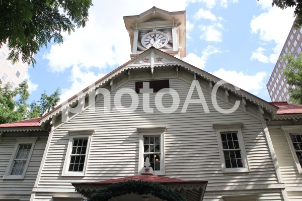
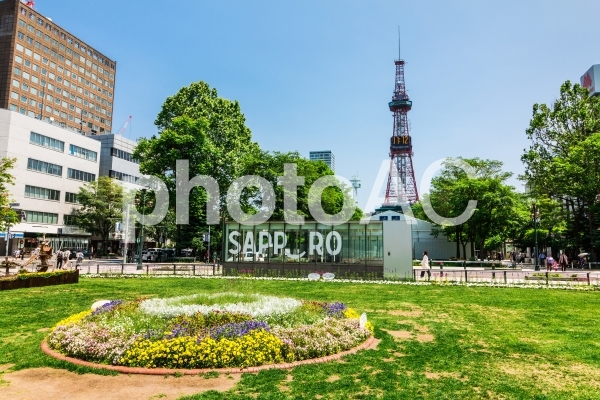
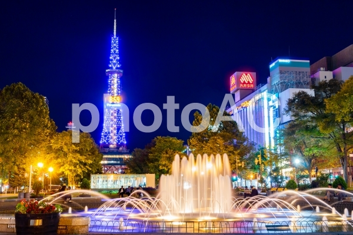
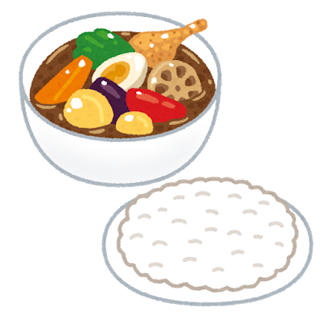

北海道にはたくさんの観光名所がありますが、今回はその中でも札幌で有名な建物についての紹介をしたいと思います。
時計台は、創建以来130余年この地にあり、札幌のまちの歩みと市民生活の変化を見守ってきた歴史ある建造物であり、札幌駅に近いため観光しやすいスポットです。札幌を象徴する建物です。
| 開館時間 | 休館日 | 観覧料 |
|---|---|---|
| 8:45~17:10 (入館は17:00まで) |
年始 (1月1日~1月3日) |
大人個人:200円(高校生以下無料) 大人団体:180円(20名以上の場合) |
テレビ塔は札幌の中心部にある自然豊かな大通公園の東端に位置しています。高さ約90ｍの展望台からは大通公園が一望できます。この公園では、イルミネーションや有名なさっぽろ雪まつりが行われるため、その景色を眺めるのには最高な場所です。夜はライトアップされ、昼とはまた違うテレビ塔が楽しめます。
昼のテレビ塔
夜のテレビ塔
| 営業時間 | 観覧料 |
|---|---|
| 9:00~22:00 (入場券販売はテレビ塔閉館時間の10分前まで) |
大人(高校生以上):800円 小学生・中学生:400円 |
北海道はおいしい食べ物があることで有名です。今回は、北海道に来たらぜひ食べてほしい食べ物を二つ紹介します。
スープカレーは札幌発祥の食べ物です。スープカレーのお店は普段あまり見かけないと思いますが、札幌市内には200店を超えるほどたくさんのスープカレーを提供するお店があります。
このイラストのように、ナスやレンコン、ピーマンやゆで卵などたくさんの具材が入っています。
札幌には、おししいパフェを出すお店もたくさんあります。今回は、札幌駅の地下街にある「四つ葉ホワイトコージ」のパフェを紹介します。
ホワイトコージは四つ葉乳業が直営するパフェ店で、北海道産の牛乳・乳製品を原料にしたパフェやスイーツがあるお店です。
実際に行った時のパフェ
四つ葉ホワイトコージのホームページ